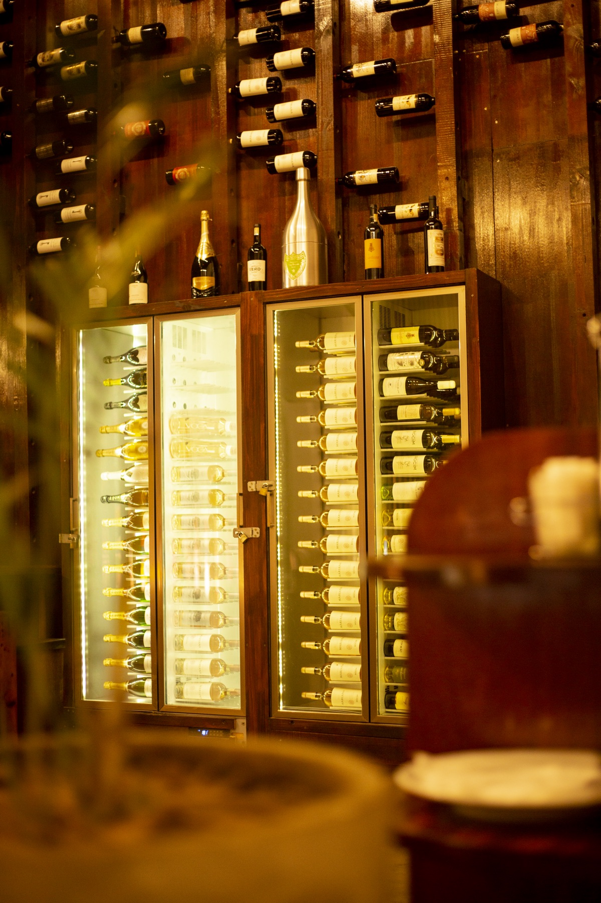
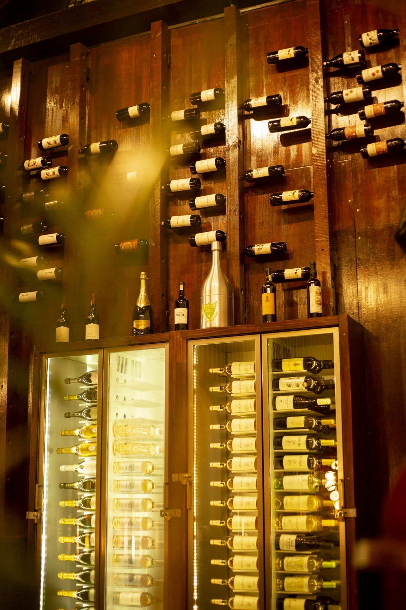

Pátio Mutamba
No centro da cidade, o mesmo cuidado à mesa.
Salas interiores e esplanada para almoços de trabalho, jantares e encontros que pedem Luanda à volta — sem perder a calma Pátio.

Pátio MutambaLocalização
Um Pátio para o ritmo da Mutamba.
Ideal para quem vive e trabalha no centro. A carta principal do Pátio, um serviço atento e um espaço que passa do almoço ao jantar sem perder elegância.
- Salas interiores
- Esplanada
- Eventos sociais e corporativos

Pátio Mutamba
Um olhar sobre o espaço.
Ambientes e detalhes do Pátio Mutamba.